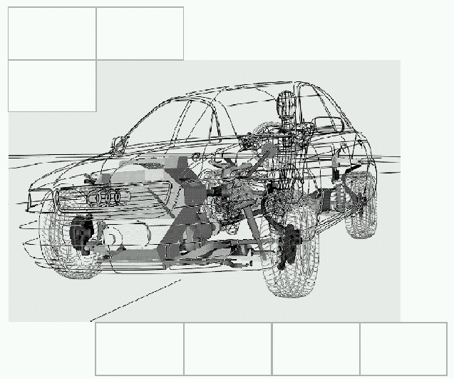
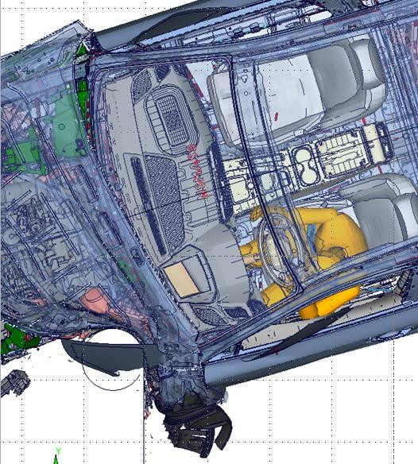
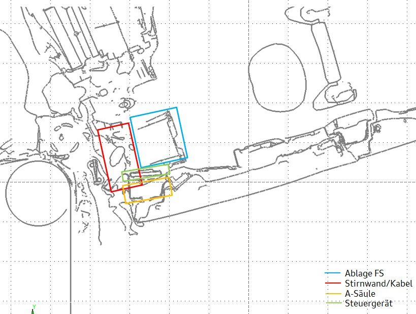
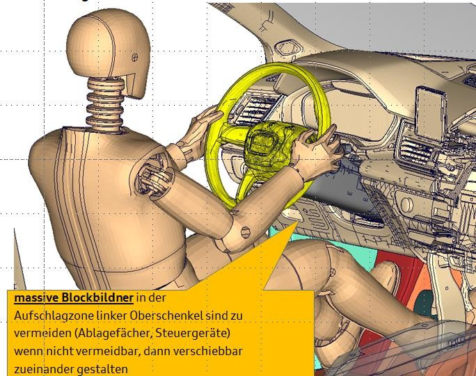

Rückhaltesystemanforderungen an das Cockpit CHINA
LAH DUM 880 KK
[redacted-co]
D[redacted]
Inhaltsverzeichnis
Zielsetzung 5Definitionen 5[redacted-person] 6[redacted-person]- und Lieferumfang 6Angebotsumfang 6Änderungen 6Dokumentation 7Freigabebericht 7Teilelebenslauf 7[redacted-person] 7Prioritäten der Dokumente 7Projektvorgaben 7Erprobungsplan und Erprobungsterminplan 7Teilebereitstellung 8[redacted-person] 8[redacted-person] 8Funktionsanforderungen der Fahrzeugsicherheit 8[redacted-person] 8Ablage, Handschuhkasten und Klappen (RdW) 10Beifahrerairbagabdeckung und Schalttafelkontur 11Kneebag 11Lenkstockschalter, -verkleidung und Bauteile im Umfeld 12Lichtdrehschalter 12Zündanlassschloss 12[redacted-person] bzw. Stellelemente 13Mittelkonsole 13[redacted-person] und Anbindung I-Tafel 13[redacted-person] 13
Änderungsdokumentation
Vorwort
[redacted-person] (LAH) beschreibt Mindestanforderungen aus [redacted-person] an das zu entwickelnde Cockpit und ist Teil des [redacted-person], siehe [redacted-person] Unterlagen.
[redacted-person] dieser Mindestanforderungen ist vom Auftragnehmer in einem Pflichten- heft zu dokumentieren. [redacted-person] ist vom Auftragnehmer auf dem aktuellen Stand zu halten.
Alle hier nicht ausreichend beschriebene Punkte müssen in Absprache mit den Fachberei- chen des Auftraggebers geklärt werden und bedürfen der schriftlichen Festlegung in einem Lastenheft. Dies gilt insbesondere für Abweichungen von Standardforderungen.
Inhalte dieses Lastenheftes dürfen Dritten ohne ausdrückliche Genehmigung des zustän- digen Fachbereiches des Auftraggebers nicht zugänglich gemacht werden.
Das vorliegende Lastenheft verfolgt das Ziel, relevante Anforderungen an die Schalttafel, die nicht an nur einer Komponente festgemacht werden können, sondern Bauteilübergrei- fend gelten, zu definieren.
[redacted-person] und alle aufgeführten mitgeltenden Unterlagen dienen zur Festlegung der technischen Daten und Randbedingungen für die Auslegung der I-Tafel für die darge- stellten Lastfälle.
[redacted-person] werden Vorschläge zur Produktverbesserung erwartet. Insbeson- dere sind die Einsatzmöglichkeiten neuer Werkstoffe und Methoden zur Verbesserung der Fahrzeugsicherheit und zur Reduzierung des Gewichts vom Serienlieferanten mit den Fachabteilungen bei [redacted-co] zu diskutieren.
|
|
|---|---|
|
[redacted-person] |
|
|
|
|
|
|
|
|
|
|
|---|---|
|
|
|
|
| [redacted-person] |
|
|
[redacted-person] hinsichtlich der Erfüllung aller Lastenheftforderungen liegt beim Auftragnehmer bzw. EDL.
[redacted-person] verpflichtet sich, alle beschriebenen Anforderungen dem Angebot zu- grunde zu legen. Er haftet für die vertragsgemäße Beschaffenheit des Liefergegenstandes, insbesondere für die Einhaltung von Beschaffenheits- und Haltbarkeitsgarantien, welche ausdrücklich als solche bezeichnet sind.
Mit dem Angebot sind vom Auftragnehmer folgende Unterlagen den zuständigen Fachab- teilungen des Auftraggebers zur Prüfung vorzulegen:
Pflichtenheft
Bauteileverfügbarkeit
Im Verlauf der Entwicklung schriftlich vom Auftraggeber festgelegte oder akzeptierte Ter- mine werden Bestandteil dieses Lastenheftes. Termine können nur im Einvernehmen mit dem Auftraggeber geändert werden.
[redacted-person], welche Änderungsumfänge innerhalb des Lastenheftes zu berücksichti- gen bzw. welche Umfänge separat zu vereinbaren sind, ist in der [redacted]festgelegt.
[redacted-person] (z. [redacted-person] Bauteilen und Prozessen) - auch nach Serieneinsatz - müssen mit dem Auftraggeber abgestimmt werden. Sie werden vom Auftragnehmer anhand von 3D-Datenmodellen und Musterteilen dargestellt und ggf. vom Auftraggeber schriftlich ge- nehmigt.
[redacted-person] nach der Lieferung der Erstmuster auf, ist ebenfalls in Absprache mit den Fachabteilungen des Auftraggebers eine kostenlose Neubemusterung vorzunehmen.
Die erforderlichen Freigabeformulare für die Änderungen sind in Absprache dem Auftrag- geber mitzuliefern.
Zu jedem Musterstand von Bauteilen muss der zuständigen Fachabteilung des Auftragge- bers in Versuch und Konstruktion eine Mustermappe mit folgenden Inhalten vorgelegt wer- den:
Freigabebericht nach [redacted-co]-Vorgabe
Ab Projektstart ist vom Auftragnehmer ein Teilelebenslauf zu führen, in dem sämtliche Ver- änderungen dokumentiert sind (siehe Anhang A zur [redacted]).
Alle an den Auftraggeber gelieferten Teile müssen durch eine geeignete Kennzeichnung eindeutig rückverfolgbar sein.
Ab Baumuster- bzw. Erstmustergenehmigung darf keine Änderung am Bauteil ohne aus- drückliche Genehmigung des Auftraggebers vorgenommen werden. [redacted-person] ohne ausdrückliche Genehmigung des Auftraggebers erlischt die Freigabe. Es erfolgt ein erneuter Freigabeprozess.
[redacted-person]- und Urheberrechte sowie Geheimhaltungsvorschriften gelten die Regelungen der [redacted]
Bei abweichenden Forderungen gilt die folgende Prioritätenliste:
Gesetzesanforderungen
Zeichnung und 3D-Datenmodelle
Lastenheft
allgemeine Lastenhefte
[redacted-person] Regeln (TL, PV, [redacted-co] KR, QP) und Formel Q-Konkret
unverbindliche nationale und internationale Normen (DIN, EN, ISO)
Es gelten die Projektvorgaben der [redacted]sowie die nachfolgend beschriebenen.
[redacted-person] und ein Erprobungsterminplan sind vom Auftragnehmer zu erstellen, mit dem Auftraggeber abzustimmen und als MS-Projekt-File, in Übereinstimmung mit dem Gesamtterminplan, vorzulegen. In diesem Zusammenhang ist auch eine Planung der zur
Systemerprobung benötigten Fahrzeugkomponenten abzugeben (z. [redacted-person], Ag- gregat).
[redacted-person]- und Versuchsteile müssen immer auf dem Baustand gehalten werden, der dem aktuellen Entwicklungsstand entspricht. [redacted-person] ist jeweils eine Abstimmung über den zu liefernden Musterteilestand durchzuführen. [redacted-person] über Versuchs- Anzahl und Aufbautermin (virtuell und physikalisch) sind im Erprobungsterminplan festzu- legen.
In der Verantwortung des [redacted-person] liegt die Auslegung aller sicherheits- relevanten Teile im Cockpit wie z.[redacted-person], Zündschloss, Kniefängerstützen, Scharniermechanik HSK usw.
[redacted-person] Cockpit obliegt es, für die Gesamtintegration des Beifahrer- und Knieairbags in die Schalttafel zu sorgen. Dies trifft auch in dem Fall zu, wenn einzelne Auf- gaben/ Bauteile an einen Unterlieferanten vergeben werden. Im Einzelnen ist dafür Sorge zu tragen, dass die Funktion der Airbags sowohl in den Ablagen/ Kniefängern als auch in der Schalttafel gegeben ist. Ferner ist der Systementwickler der zentrale Ansprechpartner für den RHS-Entwickler und zu einer aktiven Mitarbeit bei der Auslegung des Rückhalte- systems sowie der Systemauslegung verpflichtet.
In der Verantwortung des RHS-Entwicklers liegt die Vorgabe für die Auslegung aller si- cherheitsrelevanten Cockpitbauteile wie z. [redacted-person] etc.
[redacted-person] des Fahrzeugcockpits im Package erfolgt u.[redacted-person] Basis der Lastenheft- vorgaben und Auslegungshilfen der Fahrzeugsicherheit. [redacted-person]-Freeze bzw. nach erfolgter Lieferantennominierung folgt die Auskonstruktion und Detaillierung der Instru- mententafel und aller sich im Cockpit befindenden Elemente. Ziel ist es, das Cockpit und seine Anbauteile so auszulegen, dass alle [redacted-person] sowie die Anforde- rungen aus dem Verbraucherschutzerfüllt werden.
[redacted-person] der im Fahrzeugprojekt verankerten Funktionsziele der Fahrzeugsicher- heit sind die nachfolgend beschriebenen Anforderungen einzuhalten:
[redacted-person] ist so auszulegen, dass die Anforderungen von chinesischen Verbrau- cherschutzlastfall CN NCAP erfüllt werden. [redacted-person] der Funktion ist über ent- sprechende (Ersatz-)Versuche zu erbringen.
[redacted-person] und der Nachweis der Gesamtfunktion aller Bauteile im Schalttafelum- feld müssen über Simulation erfolgen.
An- oder eingeklipste Bauteile im Fahrgastraum dürfen sich bei den Fahrzeug- Crashtests nicht lösen.
Verkleidungsteile und Schalter dürfen sich bei Airbag-Auslösung bzw. im Crash (Front, Heck und Seite) nicht lösen. Sogenannte 3-D Blenden, insbesondere im Be- reich BFS Beifahrerairbag, erfordern eine zusätzliche Verschraubung, damit ein Ablö- sen bzw. Anstellen bei BF-Airbag- bzw. Knieairbag-Auslösung sicher ausgeschlossen werden kann.
Die gesamte I-Tafelstruktur und alle An- und Einbauteile sind so auszuführen, dass die Anforderungen gemäß [redacted-person] zu den Zielwerten in gesetz- lichen und Verbrauchertests erfüllt werden.
[redacted-person], die an allen Bauteilen vorgesehen werden, müssen den Anforderungen der ECE-R21 entsprechen. Ferner muss auch der Kopfaufschlag nach ECE-R21 er- füllt werden. Darüber hinaus sind landesspezifische Normen und Vorschriften zu be- achten.
[redacted-person] bezüglich des Vorgehens zur dynamischen Bereichsermittlung bzw. Kopfaufprallversuchen erfolgt mit [redacted-co].
Small Overlap Lastfall:


Bild 1: [redacted-person] am Beispiel AU426, Packagesituation während der Beaufschlagung
im [redacted-person] Overlap kann es zu einer starken Beaufschlagung der A-Säule und der Stirnwand kommen
es ist darauf zu achten, dass die im Cockpit befindlichen Bauteile so positioniert wer- den, dass eine Verschiebung zueinander möglich ist
massive Blockbildner in Lastrichtung sind zu vermeiden
in der frühen Phase muss dieser Bereich mit Hilfe der Insassensimulation bewertet und gegebenenfalls optimiert werden

Bild 2: Anforderung an den Knieaufschlagbereich links (SO)
Im Knieaufschlagsbereich ist grundsätzlich eine Defozone von 50 mm gemäß DGL – ausgehend von der A-Seite der Ablagen – in Richtung auf die Stirnwand vorzuhalten, der nicht für die Unterbringung unnachgiebiger bzw. blockbildender Elemente genutzt werden darf.
Kommt ein Kneebag zum Einsatz, reduziert sich die Defozonen-Anforderung auf 15mm, in Abstimmung mit den [redacted-co] Fachabteilungen.
Im Knieaufschlagsbereich ist eine Eindrückkraft von ≤ 3,0 kN zu realisieren. Werkstof- fe und Geometrien sind gestalterisch so zu wählen, dass eine lokale Anhebung der Flächenpressung vermieden wird (ggfls. 12mm Padding, insbes. ohne Kneebag).
steife Umrandungen sowie eine steife Verrippung der Ablagen sind zu vermeiden. Vor allem sind auch mit Hinblick auf die Kneeslidergrenzwerte keine steifen Kanten bei Ablagen vorzusehen. [redacted-person] des Handschuhkastens muss so erfolgen, daß eine Struktur geschaffen wird, die im Fall des Aufpralls eines Insassen nachge- ben kann. Dies kann beispielsweise durch eine versetzte Anordnung der Seitenwände bzw. durch Deformationselemente erfolgen.
Für die [redacted-person] sind wichtige Einflüsse des Umfeldes (z. [redacted-person], be- nachbarte Komponenten, ...) ebenfalls mit einzubeziehen. [redacted-person] der Ablagen hat im [redacted-person] und Pedale so zu erfolgen, dass Intrusionen in diesem Be- reich von der Ablage kompensiert werden.
Bei der Auslösung des Beifahrerairbags, Kneebags bzw. bestimmten Beschleunigun- gen oder im Crash darf sich der Deckel des Handschuhkastens nicht öffnen. Das gilt ebenso für andere im Fahrgastraum befindliche Klappen.
Durch die Verformung von Ablagen bzw. Kniefängern darf das Teleskopieren der Lenksäule, z.[redacted-person] Interkation mit der Lenkstockschalteverkleidung, nicht beein- trächtigt werden.
Bei der Entwicklung der Beifahrerairbagabdeckung sind die Anforderungen des Beifahrer- airbaglastenheftes sowie nachfolgende Punkte zu berücksichtigen:
Ein konstruktiver Freigang von 10 mm zur Frontscheibe ist einzuhalten.
[redacted-person] ist derart zu gestalten, dass durch die Beifahrerairba- gauslösung keine scharfen Kanten entstehen oder sich Fragmente lösen (gilt für Air- bag, Verkleidungsteile, Scheiben und sämtliche Anbauteile über den gesamten Tem- peraturbereich), die den Insassen verletzen oder den Luftsack beschädigen können.
[redacted-person] der Beifahrerairbagabdeckung und die Ausschussrichtung des Beifah- rerairbags sind so zu wählen, dass kein Anschuss der Frontscheibe erfolgt, welcher ein Brechen dieser zur Folge hätte.
Bei der Entwicklung sind die Anforderungen des Knieairbaglastenheftes sowie nachfolgen- de Punkte zu berücksichtigen:
Grundsätzlich ist ein Entfaltungsfreigang von 60mm zum normal positionierten Insas- sen-Knie / -Unterschenkel im Package umzusetzen (gilt sowohl für 50%-, 95% als auch 5%-Insassen auf F- und BF-Seite); dies ist bei der Positionierung des Kneebag- Moduls zu beachten
[redacted-person] des Luftsackes mit anderen Fahrzeugbauteilen während der Entfal- tung, welche zu Insassenverletzungen, Luftsackschädigungen bzw. fehlerhafter Luft- sackentfaltung/Beaufschlagung von Komponenten im Umfeld führen kann, muss nachweislich ausgeschlossen sein. [redacted-person] ist dabei auf die Ausfüh- rung der Lenkstockschalterverkleidung zu richten.
Bauteile im Fahrgastraum dürfen sich bei Airbagauslösung sowie im Fahrzeug- Crashtest im gesamten Temperaturbereich nicht aufstellen bzw. ablösen.
Abdeckung des gesamten Knieaufschlagbereichs zwischen Mittelkonsole und Türver- kleidung so, dass ein direktes Aufschlagen auf die I-Tafel in allen relevanten Prüfposi- tionen ausgeschlossen wird. Potentiell harte Teile, wie z. [redacted-person], Lenksäu- lenverstellhebel etc., müssen durch den Airbag vollständig abgedeckt werden, wenn sie im Aufschlagbereich liegen. [redacted-person] müssen beim Auftreffen auf die- se Teile unterhalb der Grenzwerte liegen.
Im Knieaufschlagsbereich ist ein Deforaum von 15 mm in Richtung auf die Stirnwand vorzuhalten, der nicht für die Unterbringung unnachgiebiger bzw. blockbildender Ele- mente (wie z. [redacted-person], Airbagmodul, Steuergeräte, Zündschloß, [redacted-person], etc.) genutzt werden darf. Ist die Unterbringung solcher Teile nicht zu vermeiden, so müssen diese nachgiebig gestaltet sein, sowie eine Blockbildung zwi- schen intrudierenden und dazwischenliegenden Bauteilen konzeptionell vermieden werden.
Eine schädliche Interaktion, z.[redacted-person] Schlüsselanhängers oder sonstigen Einbauten, mit dem sich öffnenden Kneebag, ist zu vermeiden.
Es darf durch die Kneebag-Auslösung oder durch das Umschlagen der Airbagklappe keine sicherheitsrelevante Beschädigung der Ablage erfolgen.
Gestaltung des Austrittsbereichs so, dass keine sicherheitsrelevante Interaktion mit dem Luftsack oder eine Behinderung der Entfaltung erfolgt.
Keine sicherheitsrelevante Interaktion mit der Lenksäulenverriegelung oder der Mittel- konsole.
Bei der Entwicklung der Lenkstockschalter, -verkleidung und weiterer Bauteile im Umfeld sind nachfolgende Punkte zu berücksichtigen:
Im Umfeld der Lenksäule im Knieaufschlagsbereich ist mindestens 40 mm Freiraum zu berücksichtigen, der bei Bedarf mit Polster sowie Lastverteiler gefüllt werden kann.
Halter und Einbauten unterhalb der Lenksäule im Knieauftreff- sind zu vermeiden.
Um ein Verschieben der Lenksäule über 80 mm im Crashfall zu ermöglichen, ist kon- struktiv in [redacted-person] ein Freiraum von mindestens 60 mm zwischen Lenkstock- schalterwurzel (siehe DGL) und Schalttafel vorzusehen (Basis: Lenksäuleneinstellung in der Mitte des Höhen- und Längsverstellbereiches).
Um den Restlaufweg der Lenksäule von 20 mm zu gewährleisten, sind die Lenkstock- schalterhebel so auszulegen, dass sie bei Blockbildung mit der Schalttafel brechen oder wegklappen – zusätzlich sind ggfls. sogenannte Einlaufschrägen erforderlich.
Lenkstockschalter, Lenkstockschalterverkleidung, Verriegelungshebel, Blenden und Bauteile im Umfeld sind so auszuführen, dass ein Verschieben der Lenksäule im Crash auch bei Aufstellen der Lenksäule um 3° nicht behindert wird. (d.h. z. [redacted-person] formationen der Ablage/des Kniefängers bei Eintauchen der Knie oder einer Interakti- on mit dem Kneebag-Modul während des Crashes sind zu beachten).
[redacted-person] der Lenkstockschalterverkleidung an der Lenksäule ist so zu gestal- ten, dass keine harten Strukturen entstehen (Lastpfade 🡪 keine Schraubdome vorse- hen) und eine robuste Führung während des Lenksäulenlaufens gewährleistet ist.
[redacted-person] ist so anzuordnen, dass eine sicherheitsrelevante Interaktion mit dem sich entfaltenden Knieairbag verhindert wird.
Bei der Entwicklung sind nachfolgende Punkte zu berücksichtigen:
Wenn der Lichtdrehschalter im Knieaufschlagsbereich liegt, dann muss er sich bei ei- ner Krafteinleitung von max. 2 kN mindestens 50 mm in die Schalttafel bewegen.
Kanten und kontaktaggressive Flächen sind durch Abpolsterungen und geeignete An- formungen zu entschärfen.
Bei der Entwicklung sind nachfolgende Punkte zu berücksichtigen:
[redacted-person] ist außerhalb des Knieaufchlagsbereiches anzubringen.
Eine schalttafelseitige Unterbringung mit teilweise Knieinteraktion ist nur möglich, wenn eine Verschiebbarkeit (50 mm) gewährleistet ist
Bei der Anordnung des Zündanlassschlosses ist eine schädliche Interaktion eines Schlüsselanhängers mit dem sich öffnenden Kneebag zu vermeiden
Bei der Entwicklung sind nachfolgende Punkte zu berücksichtigen:
[redacted-person] eines seitlichen Anstoßes des Unterschenkels durch die Mittelkon- sole ist deren Anbindung so zu wählen, dass eine Deformation von 80 mm der Stirn- wand im Übergangsbereich zum Tunnel nicht zu einem seitlichen Ausbeulen der Mit- telkonsole führt.
Konstruktion von Zierleisten und Applikationen so, dass keine schädliche Interaktion mit dem Knieairbag stattfindet (siehe auch 5.1.1)
Bei der Auskonstruktion des Übergangs von Mittelkonsole zur Schalttafel ist Modifier- freiheit sicherzustellen, d. h. :
Halter der Mittelkonsole sind außerhalb des Knieaufschlagbereiches anzu- bringen
eine Knieeinweisung ist sicherzustellen
liegt die Mittelkonsole bzw. deren Übergang in die Schalttafel im Knieauf- schlagbereich, so gilt für diese Zone die gleiche Auslegungsvorschrift wie für den normalen Schalttafel-Knieauftreffbereich (🡪 gegebenenfalls ge- meinsame Konzeptbewertung erforderlich bzw. Bewertung über CAD- Prüfkörper)
Vermeidung von Steifigkeitssprüngen
Fugenlage in Abstimmung mit Design und Fahrzeugsicherheit
[redacted-person] an der Türverkleidung sind so auszuführen, dass eine stabile Knie- einweisefunktion gewährleistet ist (kein Ausbeulen, kein Wegbrechen, …)
🡪 gemeinsame Konzeptbewertung erforderlich bzw. Bewertung über CAD-Prüfkörper
[redacted-person] der I-Tafel außen, türseitig an den Modulquerträger ist so zu gestalten, dass sich diese außerhalb des Knieaufschlagbereiches befindet (Freigang oder Knie- einweisung).
LAH (des jeweiligen Fahrzeuges) [redacted-person] LAH (des jeweiligen Fahrzeuges)
🡪 LAH xxx.857.xx Entwicklungslastenheft LU Instrumententafel
LAH LAH.DUM.880.BA Beifahrerairbag LAH (des jeweiligen Fahrzeuges) Knieairbag
LAH (des jeweiligen Fahrzeuges) [redacted-person]
LAH [redacted-phone]AD [redacted-person] zur ECE-R21 und FMVSS201 lower
LAH [redacted-phone]J [redacted-person] Fahrzeugsi- cherheit
[redacted]Entwicklungsbedingungen - [redacted-person]- gen